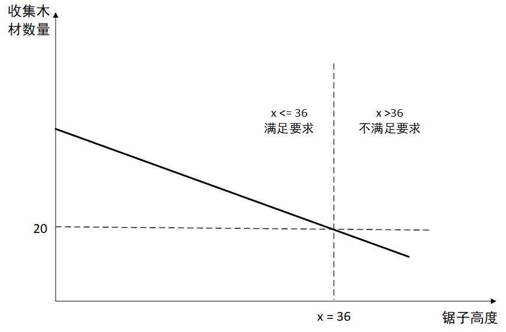

二分法
二分查找
整数集合上的二分
在单调递增序列中查找>=x的数中的最小的一个
int findUpperId(int l, int r, int x){
while(l<r){
int mid = (l+r)/2;
if(a[mid]>=x) r = mid;
else l = mid+1;
}
return l;
}int findLowerId(int l, int r, int x){
while(l<r){
int mid = (l+r+1)/2;
if(a[mid]<=x) l = mid;
else r = mid-1;
}
return l;
}
如上面两段代码所示，这种二分写法可能会有两种形式: 1.
缩小范围时，r = mid，l = mid + 1，取中间值时，mid = (l+ r)/2。
2.
缩小范围时，l = mid，r = mid -1，取中间值时，mid = (l+r+ 1)/2。
如果不对mid
的取法加以区分，例如第二段代码假如也采用mid =(l+r)/2,那么当r-l等于1时，就有mid= l(l+r)/2]= l。接下来若进入
l = mid分支,可行区间未缩小,造成死循环;若进入r = mid -1分支,造成l>r,循环不能以l == r结束。例如在数组[1,
2, 4, 7]寻找<=5的中最大的一个数。
因此对两个形式采用配套的mid取法是必要的。上面两段代码所示的两个形式共同组成了这种二分的实现方法。对两个形式采用配套的mid取法是必要的,上面两段代码所示的两个形式共同组成了这种二分的实现方法。
仔细分析这两种mid的取法，我们还发现:
mid=(l+r)/2不会取到r这个值， mid=(l+r+ 1)/2 不会取到l这个值。
可以利用这一性质来处理无解的情况，把最 初的二分区间\([1,n]\) 分别扩大为\([1,n+1]\) 和\([0,n]\), 把a数组的一个越界的下标包含进来。如果最后二分终止于扩大后的这个越界下标上,则说明a中不存在所求的数。 总而言之，正确写出这种二分的流程是:
1.
通过分析具体问题，确定左右半段哪一个是可行区间，以及mid归属哪一半段。
2.
根据分析结果，选择“r=mid, l= mid +1, mid=(l+r)/2"和“I = mid, r= mid-1, mid=(l+r+ 1)/2”两个配套形式之一。
3. 二分终止条件是l == r，该值就是答案所在位置。
使用的这种二分方法的优点是始终保持答案位于二分区间内，二分结束条件对应的值恰好在答案所处位置，还可以很自然地处理无解的情况,形式优美。唯一的缺点是由两种形式共同组成，需要认真考虑实际问题选择对应的形式。
## 实数域上的二分 需要保留\(k\)位小数时，精度eps一般取eps=10^-(k+2)。但eps不要取得太小，否则会因为浮点小数精度的原因陷入死循环
while(r-l>1e-5){
double mid = (l+r)/2;
if(cal(mid)) r = mid;
else l = mid;
}有时精度不容易确定或表示，就干脆采用循环固定次数的二分方法，也是一种相当不错的策略。这种方法得到的结果的精度通常比设置eps更高。
for(int i = 0; i < 100; i++){
double mid = (l+r)/2;
if(cal(mid)) r = mid;
else l = mid;
} 先以我们熟悉的二分查找为例来体会一下：给定升序数组\(a[n]\)，需找到\(\geq k\)的最小值。
依据题意，我们就可以将条件设置为：满足\(\geq k\)。假设答案在\([L, R]\)中，若区间中间\(mid\)满足条件，由于求的是满足条件得的最小值，说明还可以向左尝试二分，即答案一定在\([L, mid]\)上，其过程如下图所示：
现在从具体问题中抽象出来，假设最优解的评分是\(S\)，显然对于所有\(>S\)的值，都不存在一个合法的方案达到该评分，否则就与\(S\)的最优性矛盾; 而对于所有\(<S\)的值，一定存在一个合法的方案达到或超过该评分，因为最优解就满足这个条件。
这样问题的值域就具有一种特殊的单调性： 在 \(S\)的一侧合法、在\(S\)的另一侧不合法，就像一个 在\((-\infty,S]\) 上值为1，在\((S,+\infty)\)上值为0的分段函数，可通过二分找到这个分界点 \(S\)。
借助二分，我们把求最优解的问题，转化为给定一个值\(mid\), 判定是否存在一个可行方案评分达到\(mid\)的问题。
例一
\(n\)颗树高度分别为\(a_1,a_2,...,a_n\)。对于砍树高度\(h\)，可以锯下并收集每棵树上比\(h\)高的部分的木材，现在求最大的整数\(h\)，使得收集到长度为\(m\)的木材
例如5棵树，需要收集到20单位的木材，高度为[4, 42, 40, 26, 46]，可以将\(h\)调整为36，分别锯下[6, 4, 10]的木材。但是锯子再高一点就不能满足要求了。
将h从小往大枚举显然非常耗时，效率低下，可以尝试看能不能使用二分。
我们可以令判定条件为：砍树高度为\(x\)时可以获得不少于\(m\)的木材，那么就变成了要找最大的\(x\)使得"条件"成立。
再来看下这个"条件"是否具有单调性：当\(x\)超过最优解时，"条件"一定不成立；当\(x\)不超过这个数时，"条件"一定成立。如下图所示： 
以上完全符合二分条件，不过二分的取法要特别注意，见mid取法，实现代码如下：
#include <cstdio>
#include <cstring>
#include <string>
#include <iostream>
#include <algorithm>
#define ll long long
using namespace std;
const int maxn = 1e6+100;
ll n, m, a[maxn];
bool check(int x){
ll tot = 0;
for(int i = 1; i <= n; i++)
if(a[i]>x) tot += a[i]-x;
return tot >= m;
}
int main(){
scanf("%lld%lld", &n, &m);
for(int i = 1; i <= n; i++)
scanf("%lld", &a[i]);
int l = 0, r = 1e9;
while(l<r){
//二分的取法要特别注意
int mid = (l+r+1)>>1;
if(check(mid)) l = mid;
else r = mid-1;
// cout << mid << endl;
}
printf("%lld", l);
}
使用二分答案技巧的条件： 1) 命题可以被归纳为找到某命题P(x)成立(或者不成立)的最大(或最小)的x 2) 把P(x)看作一个值为真或假的函数，那么它一定要某个分界线的一侧全为真，另一侧全为假 3) 可以找到一个复杂度复杂的算法来检验P(x)的真假
通俗来说，二分答案可以用来处理"最大的最小"或"最小的最大"问题
例二
下面是一个经典的例子。 >有\(N\)本书排成一行，已知第\(i\)本书的厚度是\(A_i\)。把他们分成连续的\(M\)组，使\(T\)最小化，其中\(T\)表示厚度之和最大的一组的厚度。
假设最终答案为\(S\)，如果要求每组的厚度都\(<S\)，那么这\(M\)组一定不能容纳这些书，可能需要更多的组才能把书分完， 也就意味着对于本题的限制条件不存在可行的分书方案。如果每组的厚度可以\(>S\)，那么一定存在一种分书方案使得组数不会超过\(M\)（一定范围内都是可以分为\(M\)组的，只要不是厚度过大）。最优解就处于分书可行性的分界点上，它们之间的关系如下图所示：

而这里的判定条件就是：当一组书最大厚度为size时，是否能够把书分得的组数不超过M
bool check(int size){
int group=1,rest=size;
for(int i=1;i<=n;i++){
if(rest>=a[i]) rest-=a[i];
else group++,rest=size-a[i];
}
return group<=m;
}
int main(){
int l=0,r=sum_of_ai;
while(l<r){
int mid=(l+r)/2;
/*
由于是求最小值因此每次满足条件后让r = mid
这样能够让求的值尽可能往小的收缩
*/
if(check(mid)) r=mid;
else l=mid+1;
}
cout<<l<<endl;
}